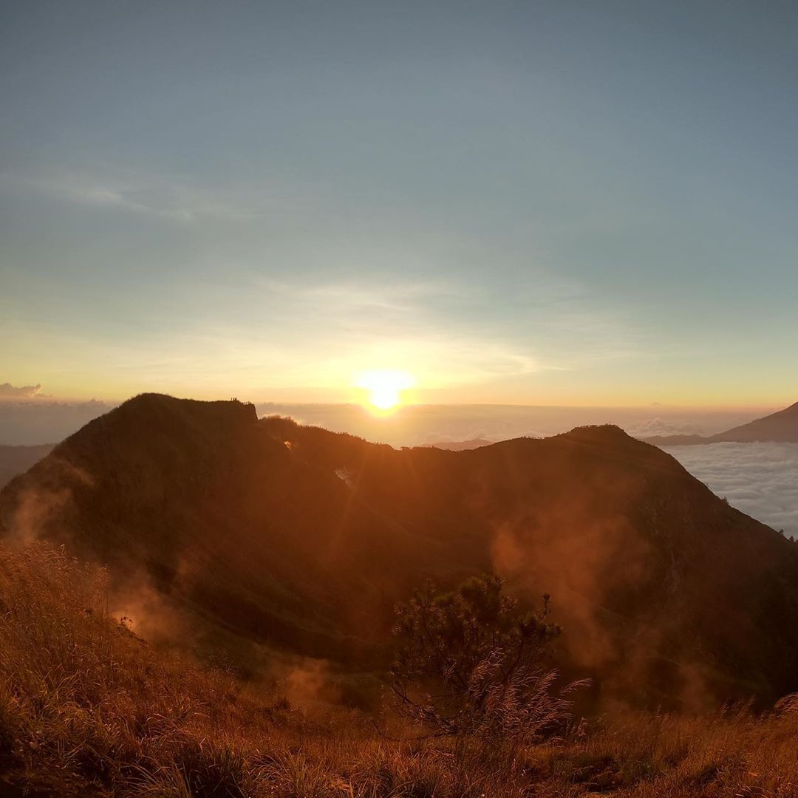
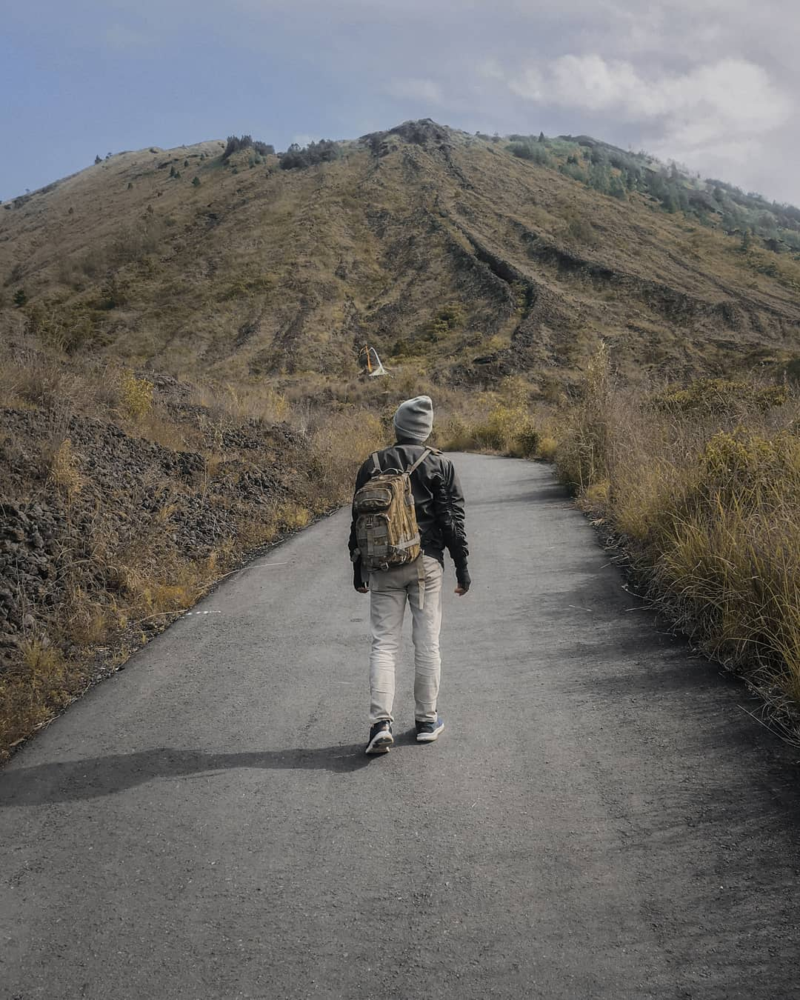
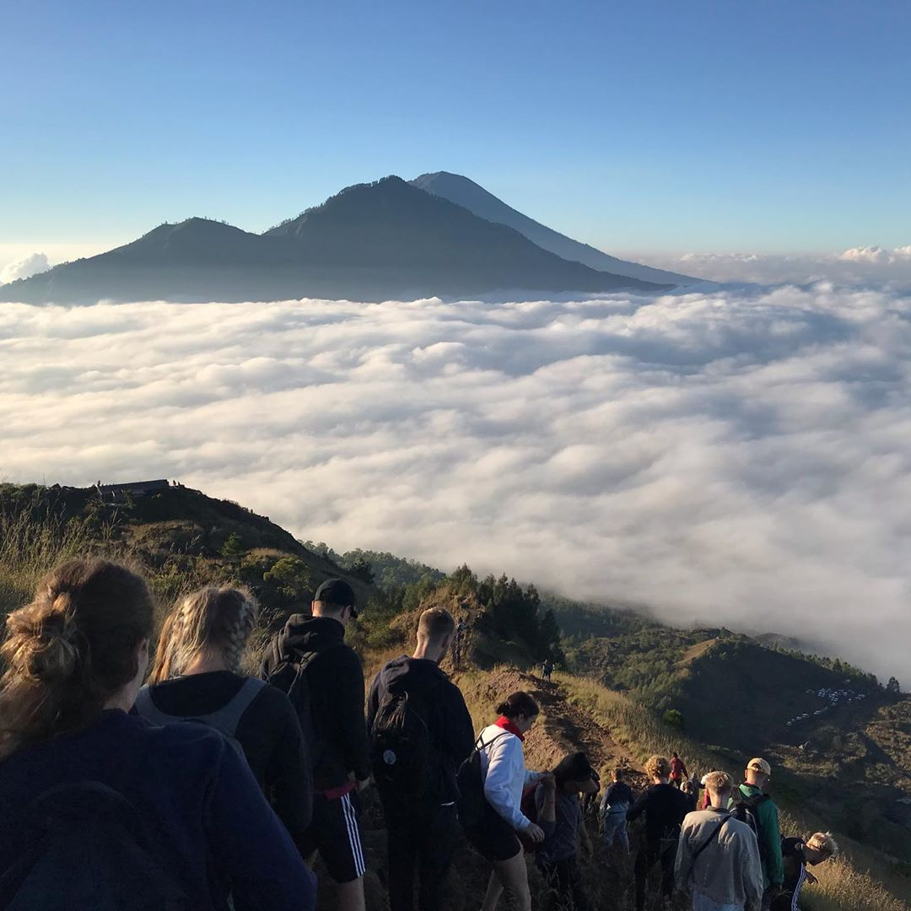
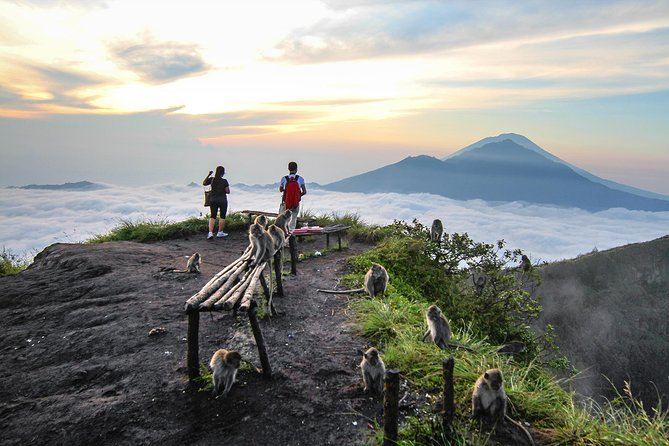
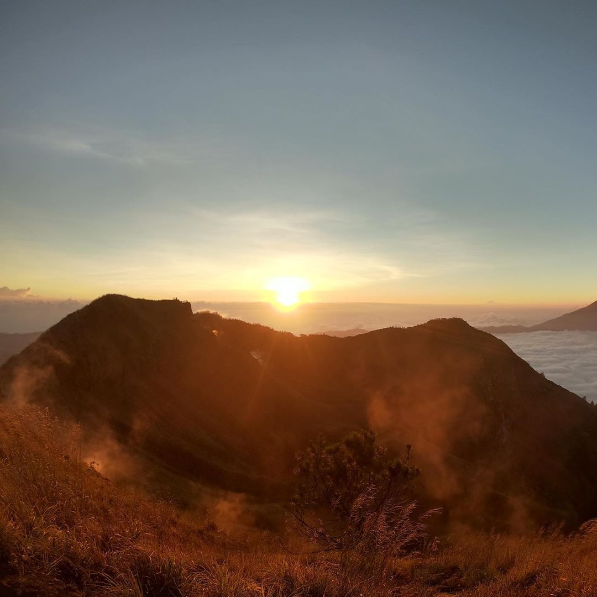
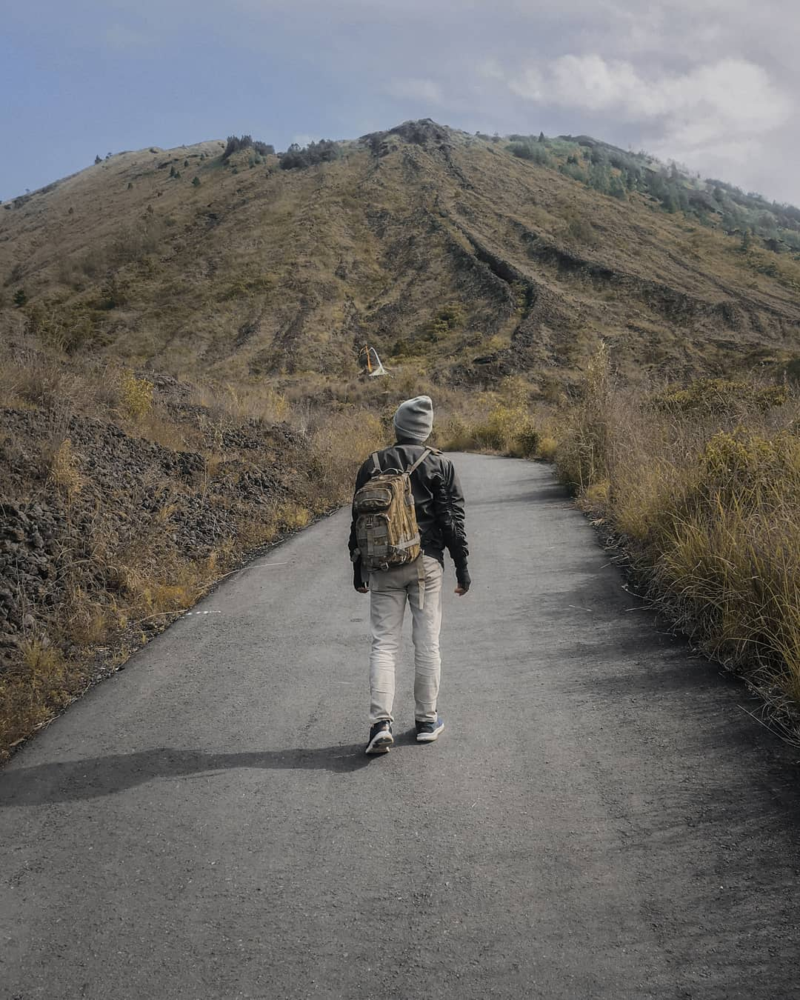
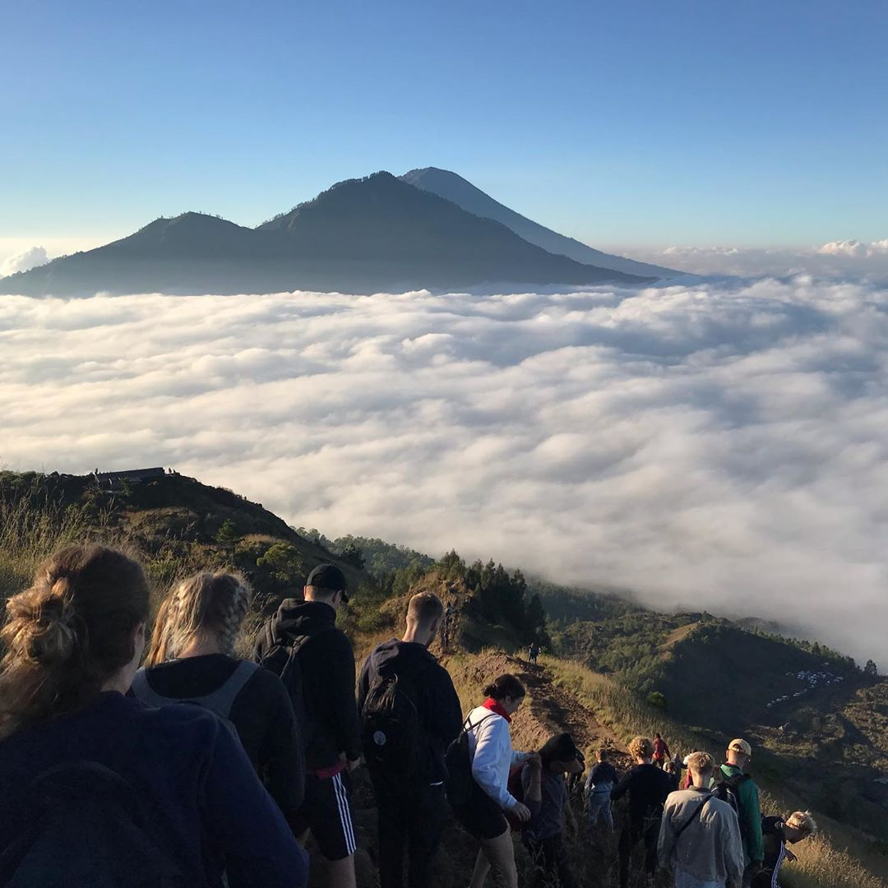
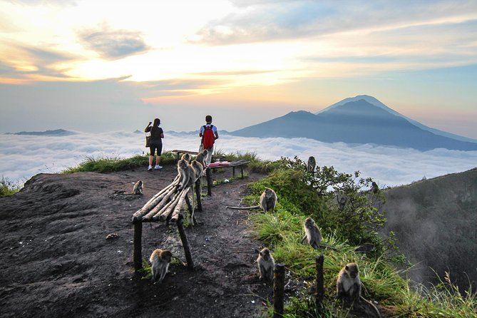

Pendakian Batur
Cluster Karanganyar
Mendaki Gunung Batur adalah salah satu kegiatan paling menarik di Kintamani yang tidak dapat dilewatkan. Tidak ada tempat lain yang bisa memberikan sambutan yang lebih baik terhadap matahari terbit. Gunung Batur dianggap sebagai salah satu gunung suci oleh umat Hindu, trekking saat fajar di Bali sangat terkenal di kalangan wisatawan di mana pun, di seluruh dunia. Rasakan tantangannya saat mendaki, tetapi Anda terus berjalan untuk mencapai puncak dan menikmati fajar yang menakjubkan. Bersebelahan dengan Gunung Batur terletak danau Batur berbentuk bulan sabit yang besar, semuanya dikelilingi oleh tebing tinggi tepi kawah, membuat pemandangannya benar-benar luar biasa. Titik awal untuk kegiatan trekking ini adalah di Karang Anyar Cluster, terutama di desa Batur Tengah.
Trek to Mount Batur is one of the most exciting activities in Kintamani which cannot be missed. Head fast to Batur and see the sun rising. No other place can provide a better welcome the sun. Mount Batur is considered as one of the sacred mountains by the Hindus. The dawn trekking in Bali is exceptionally well known among the vacationers everywhere, throughout the world. Feel the difficulties as you the dimness raises them but you trek continuously to reach the top and appreciate the stunning dawn. Adjacent to Mount Batur lies the large crescent – shaped Batur lake, all surrounded by the high walls of crater rim, making the view absolutely magnificent. Starting point for this trekking activity is in Karang Anyar Cluster, especially in Batur Tengah village.
1 review
 Robert
Robert
"One of the most popular places in bali. The sunrise trek was amazing. Don't miss it"
on July 5, 2019
Beautiful place. You will be hassled about getting a guide on your way down there. Get the guide, the trek up is unmarked and difficult. A guide will make it a lot easier. Plus, the guide will tell you about the mountain and be very helpful.
Copyright © 2019 Batur Global Park Official Website